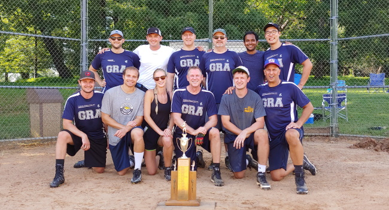
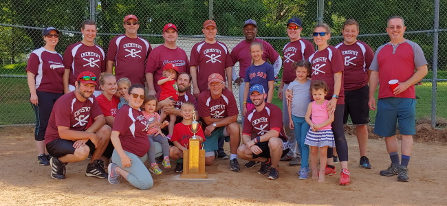

Tournament Champions: GRA

Season Champions: Chemistry

All of the tournament's weekday games have been completed. Saturday's games start at 9:15 AM. Come early to make sure that you can get through the front gate. Given the rain on Friday, the fields may also need a little bit of work before the games start.
Field 2 will see more action than usual on Thursday. The OC Bombers and GRA will finish their game that had to be suspended on Tuesday when it started raining. The game will pick up in the 2nd inning and will be played using a 1-1 count. The game will end after 5 innings. Immediately following the game, NCNR will play the team loses the game. This game will also use 1-1 count and be 5 innings. NCNR will be the visiting team.
After a successful and fun season, the tournament is set! Check out the tournament schedule to see the time and dates of games.
Congratulations to Chemistry for securing the regular season championship and the #1 seed in the playoffs. The 2nd through the 6th seeds are still in question. 2 through 4 will go to GRA, SB, and CBT where GRA has the head-to-head tie breaker over SB, SB has the tie breaker over CBT, and CBT the tie breaker over GRA. The 5th and 6th seeds will go to OCB and ET, where ET has the tie breaker for runs scored in head-to-head games (1-1, but ET outscored OCB 31-27). NCNR is the 7 seed. It should be an exciting final week! The tournament schedule for 2019 has been updated.
After a little work by Jack, both fields should be available for the games tonight.
It didn't take long for the first rainout of the season. The late afternoon rainfall left both infields covered in water. All games are off.
The 2019 season is underway with both fields open! Have fun and play ball!
Tournament Champions: Entropic Thunder
Season Champions: Entropic Thunder
With the rain today, both fields are unplayable and all games have been postponed.
1 PM - Field 1 is uplayable due to water so the game on field 1 has been postponed. Jeff is currently working on Field 2. A decision on field 2 will be made this afternoon.
Field 2 is currently uplayable due to debris that will be removed in the next day. The game on field 2 has been postponed. Field 1 has puddles of water, but could be playable if players work on it and then let the sun dry it out. Update: The game on field 1 is postponed.
July 26 - The sun is finally out. The coaches will inspect the fields later today to see if they are playable.
Field 1 is unplayable so the game on that field has been postponed. Field 2 is soft, but playable so that game is on.
Game Results, Standings and the News page have all been updated and will now be kept current through the rest of the season.
As of 4 PM, Field 1 is unplayable so the game on that field has been postponed. Field 2 is soft, but playable so that game is on.
Due to all the rain that we've had and the forecast for today, both games have been postponed.
The 2018 season has started! Good Luck to all teams! The web site a little behind and is in the process of being updated.
Due to the heavy rains, both fields are unplayable. All games for August 15 have been postponed.
A yellow jacket nest was found in the ground on the walk from the 222 parking lot to field 2. The nest has been sprayed. If you see other nests around, please let your coach know so that she or he may get it sprayed.
Both scheduled games for June 29th have been postponed. However, the QF vs. NCNR game that was originally scheduled for June 22 will now be played on June 29.
Both fields are too wet from the recent rain so both games are postponed.
The fields were inspected to see whether games can be played today. Field 2 has absorbed the water well enough and is playable so the GRA/CBT game is on. Field 1 is too wet around home plate and it is not playbale so the OC Bombers/NCNR game is postponed.
The one page umpiring help sheets have been updated to include the rule changes for the 2017 season. Check out the Umpiring Page to download and print them.
Both fields 1 & 2 have been loosened and machine dragged so they should be really nice to play on. Hand dragging the fields after games will help keep the fields in the best possible condition.
The snow is long gone, the sun is out and it's time to start playing ball! Good luck to all teams! Here's to a fun season!
Jeff Krzywon has taken over as the commissioner of the SEBA Softball League for the 2017 season. The distribution of tasks to be done for the league was changed by the board of managers so that each team is now responsible for one aspect of the league in support of the commissioner.
Tournament Champions: Entropic Thunder
Season Champions: OC Bombers
The schedule for the tournament has been posted with the teams shown based on their seedings. It should print onto one landscaped page. Games start on Tuesday! Good luck to all!
Congratulations to the OC Bombers who have clinched the #1 seed in the tournament and Entropic Thunder who has clinched the #2 seed. There are still close races for the 3 & 4 seeds as well as the 5, 6, & 7 seeds.
(Updated 4:05 PM) It has started raining again in Gaithersburg. Games are cancelled for tonight. The storm to the west combined with the storm that had popped up in Rockville and it looks like the rain free gap that was expected will be filled with rain. In fact, I just saw George Clooney and Mark Wahlberg sail by saying something about setting the fish market in the morning.
(Updated 3:42 PM) It has rained in Gaithersburg. The rain may let up within the next 20 minutes or so. I think that 90 minutes will be enough time for the fields to dry out or for the water to run off. Next update should be shortly after 4 PM.
(Updated 3:09 PM) Games are currently on. It looks like the storms will be passing to our north and that if we are hit with a storm before game time, it will pass quickly. With the fields being so dry, they should also recover quickly. The web site will be updated if the status of games changes.
It is going to be hot for the games today. Make sure to drink plenty of water! If anyone at the games runs out of water, you can get a refill from the water cooler on the Chemistry bench on Field 1.
All games for June 23 have been postponed. Both fields currently have standing water with little chance that they will dissipate and be dry by game time. Also, the best chance for thunderstorms this evening is at 6 PM. The coaches will work to get the games rescheduled.
It has been five years since the SEBA Softball league has had a web site. This year we are bringing it back. Information about the teams, schedules, standings will be updated here. At the moment, the top level pages are working. Games status will be updated on the web site in case of inclement weather. I'll post updates as different parts of the site come back online. If anyone is interested in helping with the upkeep of the web site, please let Dinis Camara know.
Since Doug Meier has left NIST for another job, we are in need of a new commissioner. Dinis Camara has volunteered to reprise his role as commissioner for one year so that the season can go on. However, we need someone to step up and volunteer to be the next commissioner. Ideally, that person can be the assistant commissioner for the year to learn the ins and outs of what needs to be done. Please let Dinis or your coach know if you are willing to help out. (Not sure of the reference in the header? Check out the stories from the 2010 season.)
The 2011 Season starts May 10!
The rain that moved through last hour left the fields in playable condition. There are storms currently in West Virginia associated with a cold front that are coming our way. However, we are on the upper limit of the storms. Looking at the radar, they might go just south of us in which case we can get all the games in. If not, then they will probably roll in just before 7. (The front edge of the storm is just rain, not severe weather.) In addition, the pathway between Field 1 and the 101 Parking Lot has been reopened. So the teams on field 1 would be able to get to their cars quickly in the case that storms roll in. Also, both fields were mowed today. (There are some clumps of cut grass in the outfields.) Plant said that they will be trying to work on the growth on the infields over the weekend.
Doug has received phone confirmation from Bruce Connelly at Grounds Maintenance that the picnic grove damage, while extensive, doesn�t extend to the fields. For Field 1 access we�ll just have to walk the long way around. It is recommended that you park your car in the Building 222 Parking Lot. So, barring a surprise 5:30 thunderstorm, field conditions will not be effected by the storm damage, and we�re likely playing today. Real call still goes out at 3 PM, so watch this space!
The new equipment bins are in but need to be set up. If you can assist in setting up the bins, please contact Doug Meier. thank you to Rod Ibacache and Renee Bolden of SEBA for helping to get our new equipment sheds approved and ordered. I also want to thank Jim Fort (NIST-Fits), Matt Bolden (OCB), Patrick Gleichmann (Quantum Fielders) and Yooyoung Lee (Quantum Fielders) for assistance at various stages of assembly. Hopefully we should have them up and ready by the end of this week.
Check out the Gaithersburg Radar at the Weather Channel web site.
No, Tony Danza isn't running the league now, but the nominations have been made and the vote is in. Doug Meier is the commissioner for 2010. Dinis Camara will be the assistant commissioner for 2010.
Each year before the season starts, any member of the league may propose a rule change. If you have a change that you would like to suggest for a vote, please send it to the Board of Managers at softball@nist.gov. You can also look at the current rules as well as the changes that have been made over the last few years.
Tournament Champions: CBT Monsters
Season Champions: CBT Monsters
Tournament Champions: CBT Monsters
Season Champions: CBT Monsters
Tournament Champions: CBT Monsters
Season Champions: CBT Monsters
Tournament Champions: CBT Monsters
Season Champions: OC Bombers
On Tuesday July 25, the OC Bombers and Chemistry battled to a final score of 5-2 in the second game of their double header. This matched the fewest number of combined runs scored in a game over the past 9 seasons. 7 combined runs has happened twice before in that span: once in 2005 and once in 1998. Since 1998 there have been 6 games (forfeits not included) where the two teams combined to score 10 runs or fewer.
There is now a first aid kit that is available out at the fields for injuries that occur. The kit is located in the equipment bin on field 1. If you use anything from the kit, please let the commissioner know so that the kit remains well stocked.
Tournament Champions: OC Bombers
Season Champions: OC Bombers
{kind=link}
{kind=link}